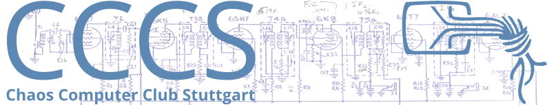
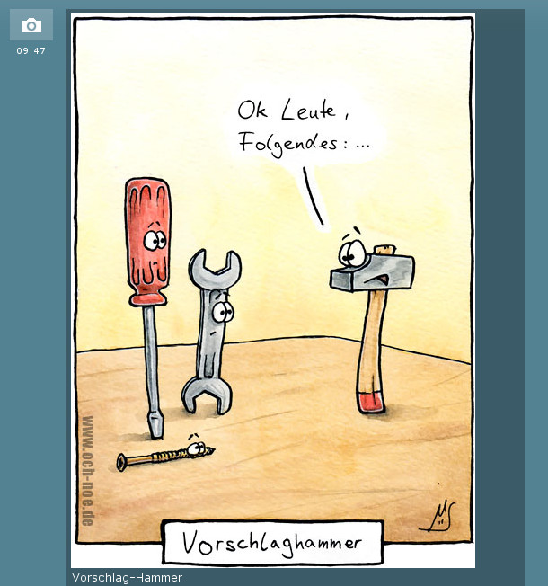
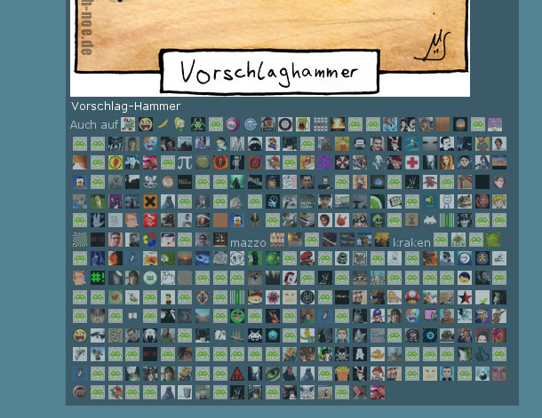
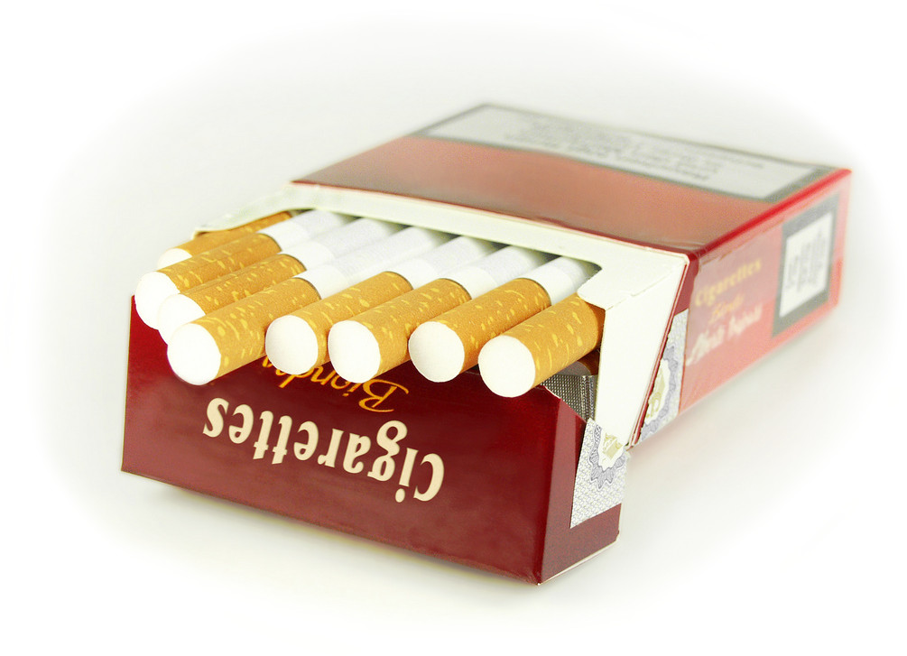
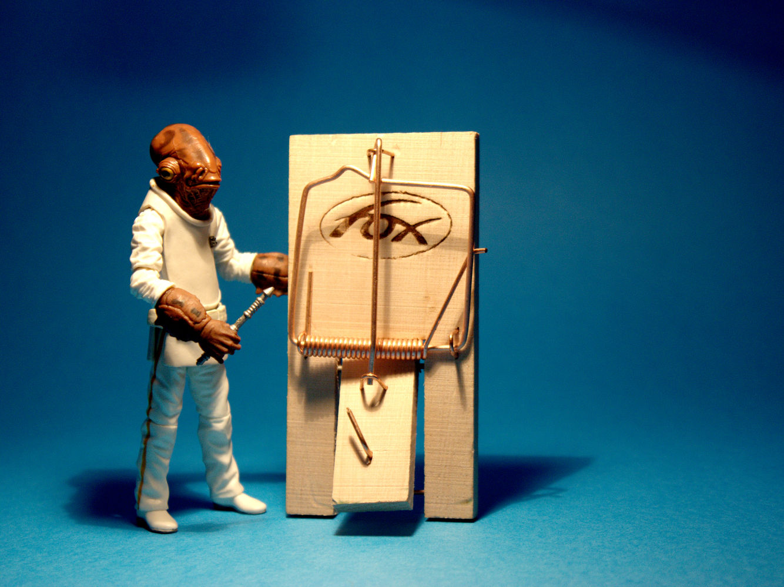
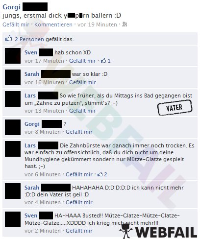
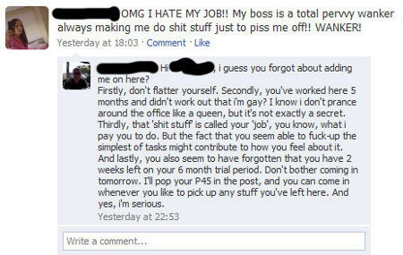

Facebook
Stefan Schlott
Juni 2012
Risiken und
Nebenwirkungen

Contents
„Suchtfaktor“ von sozialen Netzen
Bestätigungs-Gefühl
Bestätigungs-Gefühl...

...mit nicht nachvollziehbaren Regeln

 ?
→
→
Direkte „Fallen“

Kleinere und größere Peinlichkeiten
- Postings mit zu hoher Sichtbarkeit
- Falsche Gruppe gewählt (oder öffentlich gepostet)
- Vergessen, wer in der Gruppe ist
- Detaillierte Infos im Profil verraten viel über euch
- Jobsuche (unpopuläre Meinungen, „Saufbilder“, etc.)
- Opfer politischer Extremisten
- ...


Was speichert Facebook noch (und was kann man damit tun)?
Was Dein Profil über andere verrät